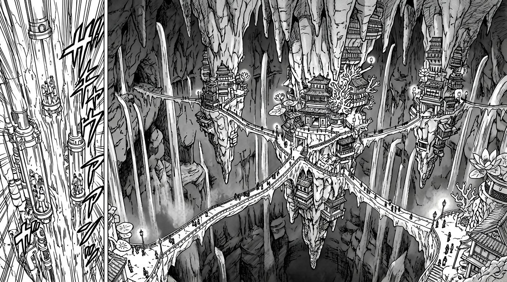
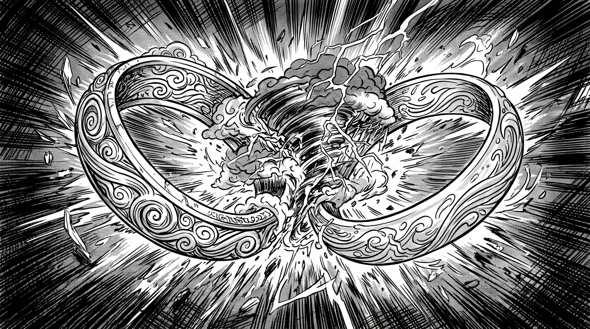

Вода точит камень

Коалиция Лазурных Рек — самое богатое и самое коварное государство Ауракса. Там, где другие фракции решают споры мечом и огнём, Коалиция предпочитает золото, контракты и вежливые улыбки, за которыми прячутся клинки. Их девиз звучит просто: «Вода точит камень». Им не нужно побеждать — достаточно подождать.
Столица, Аква-Гранд, не стоит на земле. Город подвешен над бездонным ущельем, чьё дно никто никогда не видел. Здания построены на гигантских сталактитах — каменных клыках, уходящих вниз в бесконечность. Между ними — мосты из зачарованного нетающего льда, прозрачные, скользкие и смертельно красивые. Водяные лифты — столбы воды, бьющие вверх — переносят грузы и людей между уровнями. Сотни водопадов срываются со стен ущелья, и в их брызгах постоянно горят радуги.
Везде — лотосы и светящиеся кораллы. Воздух пахнет свежестью и мокрым камнем. Звук падающей воды не стихает ни на секунду — к нему привыкаешь за несколько дней и перестаёшь замечать, но стоит уехать — и тишина оглушает.
Коалицией правят Торговые Принцы и Матриархи — семьи, контролирующие торговые маршруты. Их одежда — полупрозрачные шелка, украшения из кораллов и жемчуга. Ткани буквально струятся, как водопады. Воины носят чешуйчатую броню из лёгкого металла или зачарованного льда — она не сковывает движений, а на поясах крепятся фляги сложной формы, из которых маги мгновенно извлекают воду для атак.
Коалиция верит в Двух Лун, управляющих приливами. Их философия — баланс, карма и «круги на воде»: любое действие порождает последствия, расходящиеся волнами. Это не столько религия, сколько политическая доктрина: каждый ход просчитан на десять шагов вперёд.
Для простых людей Аква-Гранд — рай. Для тех, кто живёт на нижних сталактитах — клетка из красоты, выбраться из которой можно только по ледяному мосту. А мосты скользкие. И под ними — бездна.
Когда два элемента рождают третий

Любой ученик первого курса знает: два кольца разных стихий можно активировать одновременно. Но мало кто выдерживает. Потоки маны конфликтуют внутри тела мага — как два течения, столкнувшиеся в узком русле. Боль, потеря контроля, в худшем случае — разрыв энергетических каналов.
Однако, если маг обладает достаточной волей, точностью и пониманием обеих стихий, потоки можно не просто удерживать — их можно сплести. В момент слияния рождается нечто принципиально новое: не сумма двух элементов, а третье качество, которого не существовало прежде.
Ветер и Вода — не просто «мокрый ветер». Это Шторм: замкнутая погодная система, порождающая дождь, молнии и шквалы. Чем дольше маг держит слияние — тем мощнее буря. Огонь и Земля — не «горячие камни». Это Лава: расплавленная магма, медленная, но неостановимая, прожигающая любую защиту.
Но за всё приходится платить. При слиянии каждое кольцо теряет примерно половину своей мощности. Шторм слабее, чем Ветер и Вода по отдельности, — но он обладает свойствами, которых нет ни у одного из них. Это компромисс: мощь в обмен на уникальность.
Тройное слияние — три стихии одновременно — считается теоретически возможным, но на практике зафиксировано лишь несколько случаев за всю историю. Потери энергии возрастают катастрофически, а контроль над тремя конфликтующими потоками требует концентрации, на которую способны единицы. Большинство попыток заканчиваются откатом: магия бьёт по самому магу.
Идеальное слияние — без потерь, когда стихии не конфликтуют, а дополняют друг друга, словно притоки одной реки, — упоминается лишь в древнейших текстах. Современные учёные считают это вымыслом. Для идеального слияния маг должен понимать саму суть маны — не как инструмент, а как язык, на котором говорит вселенная.
Но кому такое под силу?